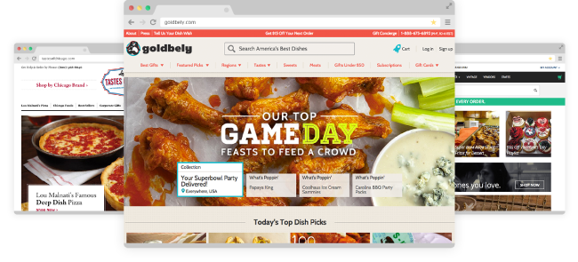
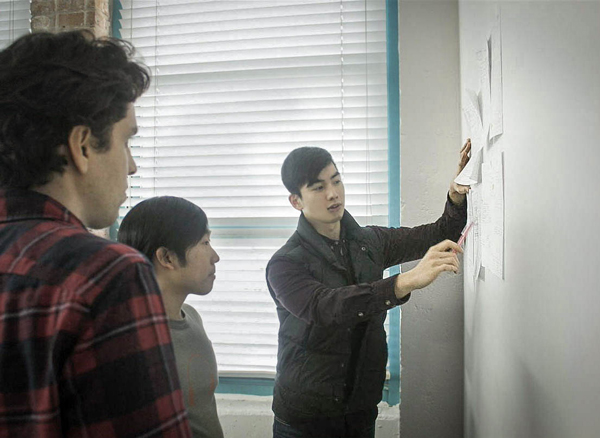

Knosey
Kahoots
Pieces Of There
Pieces Of There is an e-commerce brand that sells curated gift baskets, or "homesick cures from around the world."
My team was tasked with beautifying the existing site and defining the best marketing strategy for the business.
- Team Lead
- Branding
- Visual Design
- UX Research
- Brand Style Guide
- Wireframes + Site Map
- Visual Designs
- Prototype
- Usability Testing
Our team went through Google's 5-Day Design Sprint, a rapid product design process devised by Google Ventures to prototype and validate a product in just five days.
As the team lead, I remained in regular contact with the client and managed team members' roles and tasks.

In our initial client meeting, we learned that Pieces Of There was open to shifting gears in its business from solely distributing gift-baskets/care-packages to selling unique products from specific regions or cities.
We began by conducting a competitive analysis to make note of other brands' successes and failures and to become familiar with prototypical design decisions in the e-commerce space. Following the rules of cognitive fluency, we conceptualized which UI elements would make Pieces Of There's site a familiar and easy-to-use interface, yet unique in the way it invokes a sense of homey coziness.
On this day, we sketched out various wireframes. Below are my sketches and site-map:
{kind=link}
{kind=link}
The next day, the team gathered and discussed our wireframes with one another. We attached colored stickers to the parts of each sketch that we wanted to flesh out further, essentially creating a heat map indicating the most desired design components.
We noted that our wireframes visually conveyed the business via three distinct concepts, so we decided to individually take on a design concept to own and further.
The concept that I took on focused on thematizing the city :
Below are my final home, city, and product page designs:
{kind=link}
{kind=link}
{kind=link}
I also created a brand style guide based on the above designs:
{kind=link}
Next, using InVision, we built two quick and dirty prototypes:
- Concept 1 is a "beautified" prototype of the existing site, maintaining the overall structure and theme of homesickness.
- Concept 2 is our take on the theme of hyperlocality.
We prototyped both concepts in order to test our theme of hyperlocality against the theme of homesickness.
We then conducted a Verify App preference test, which garnered 200 responses, 60% of which favored our city-centric concept.
Lastly, we conducted in-person user testing with our prototypes to further inform and validate our design decisions.
Contact Me
michaelmyom@gmail.com201-290-4849